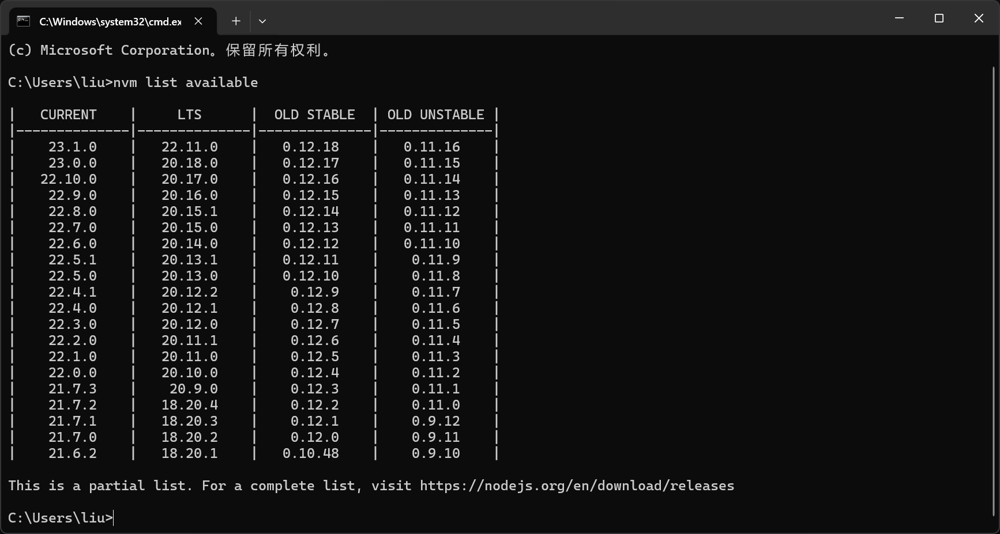

# NVM&node
首先下载安装 nvm，并通过 nvm 安装 node
这里博主直接选择了当前最新的 LTS 版本

配置好环境变量与镜像源之后，整体路径如下：
- study_program\nvm
- node_cache
- node_global
- node_modules
- nodejs
- nvm
# pnpm
pnpm 全称 performant npm，意思为高性能的 npm。pnpm 解决了 npm/yarn 内部潜在的 bug，极大的优化了性能，通过硬链接减小了内存。
# 安装
运行以下指令
npm install -g pnpm |
安装好的 pnpm 在上一节配置的 nvm\node_global 文件夹下。我们下面对 pnpm 配置文件夹路径与系统变量：
# 全局bin地址 | |
pnpm config set global-bin-dir "E:\Files\pnpm" | |
# 包元数据缓存地址 | |
pnpm config set cache-dir "E:\Files\pnpm\pnpm-cache" | |
# pnpm-state.json文件（仅由更新检查器使用）地址 | |
pnpm config set state-dir "E:\Files\pnpm\pnpm-state" | |
# 全局依赖目录 | |
pnpm config set global-dir "E:\Files\pnpm\global" | |
# 所有包被保存在磁盘上的位置。 | |
#（操作后，总目录pnpm下不会再生成store文件夹） | |
pnpm config set store-dir "E:\Files\pnpm\pnpm-store" |
这样的好处：
- 当前系统盘根目录不会产生 pnpm-store 文件
C:\Users\liu\AppData\Local\pnpm下不会有 store 文件夹C:\Users\liu\AppData\Local下不会再产生 pnpm-state 与 pnpm-cache 文件夹
得到的路径层级如下
- Files\pnpm
- pnpm-cache
- pnpm-state
- pnpm-store
- global
pnpm 有两种安装方式，在当前目录安装以及全局安装，这里我们应该尽量在当前目录安装，注册项目依赖。
# 原理
花了一个多小时终于搞明白 pnpm 工作原理了。简中没有什么好用的资料，浪费我这么久时间，日勒你妈了
简单来说，就是 npm 直接安装包，会重复下载很多包，导致一个 node_modules 特别大。后面 npm 自己也意识到这个问题并试着改进。
# 链接方式
要聊这个问题我们先搞清楚什么事硬链接，符号链接和目录链接。
- 硬链接
- 符号链接

-
目录链接
有点像快捷方式，实现路径重定向。当访问链接目录时，系统会自动重定向到实际目录
对于查看链接类型与位置，win11 的文件资源管理器做的并不好，这里推荐插件 linkshellextension
# 具体解释
node 包高性能管理究竟是个什么样子，npm 搞了很多年，也并没有完全搞清楚。可能 yarn 的思路比较好，搞了个新文件 yarn.lock，但是后来这个用于版本统一的方式僵化了。
pnpm 的思路是，我搞一个全局存储目录 pnpm-store，然后每次 install 时，文件本身是被安装在 pnpm-store 下面的，一串一串乱码做名称，而后每次要使用时链接过来。
以在项目根目录 pnpm i lodash 为例：
- 首先 lodash 包会被下载到我们配置的 pnpm-store。
- 然后呢，pnpm 会在 json 和 yaml 里注册
- 接着 pnpm 在当前的目录下新建一个 node_modules 文件夹，文件夹里有一个 lodash 文件夹和.pnpm 文件夹。
lodash 文件夹有个快捷方式符号，是目录链接，路径定向到：
.\node_modules\.pnpm\lodash@{版本号}\node_modules\lodash\ |
这个藏里面的真正的 lodash 文件夹是真的，但是里面的文件是假的，从 pnpm-store 借（硬链接）过来的！
梳理一下，所以你真正要用到 lodash 时，是这样：
要使用文件 ——> .\node_modules\ 文件夹 —(目录链接)—>
.pnpm\ 文件夹 \ 具体文件 —(硬链接)—>
pnpm-store 下的真正文件，乱码名称
不管咋说，反正实现了文件的最大利用，节省了内存。同理，全局安装包时，就直接在你的 pnpm-store 下安装，并在 global 目录里注册（对应上面操作 2 和操作 3）
当你 pnpm remove lodash 或 pnpm remove lodash -g 时，只是删除.\node_modules\ 文件夹！！！所以这个时候真正文件还在 pnpm-store 下，没被删。
这里有个问题，官方文档说
pnpm store prune指令可以删除 pnpm-store 下不被引用的文件。博主发现就算执行了，删除文件数也是 0；若想真正删除，要求对应文件没有硬链接绑定，即需要手动删除.pnpm 下的文件。注意哦，就算收纳到回收站，硬链接依然在，必须清空回收站才算解除硬链接。
想删除真正文件释放内存，目前博主认为需要手动删除后，运行代码：
pnpm store prune |